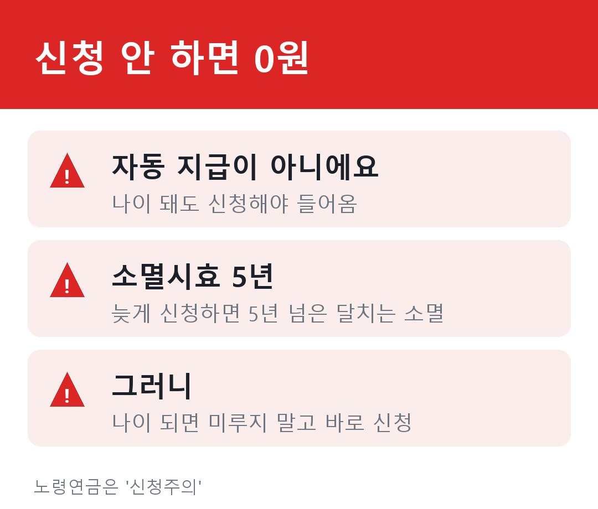
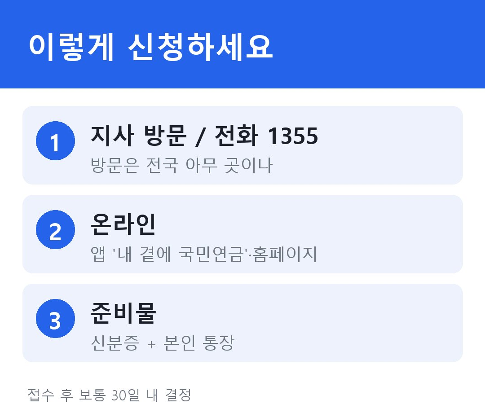

노령연금, 나라가 알아서 안 줍니다 (신청 안 하면 0원)
많은 분이 이렇게 알고 계세요. "나이 되면 노령연금이 알아서 통장에 꽂히겠지." 아니에요. 신청하지 않으면 단 1원도 들어오지 않습니다.
국민연금은 '신청해야 주는' 제도예요. 그래서 가만히 기다리기만 하면 받을 돈을 놓칩니다. 어디서 새는지, 그리고 어떻게 챙기는지 정리해드릴게요.
■ 함정 1 — 신청을 안 하면, 묵힌 돈이 사라져요
나이가 됐는데 신청을 미루면 어떻게 될까요? 권리 자체가 사라지진 않지만, 돈은 새기 시작합니다.

노령연금에는 '5년'이라는 시한이 있어요. 받을 권리가 생긴 때부터 한참 지나서 신청하면, 거슬러 5년이 넘은 기간의 연금은 시효가 지나 받지 못합니다. 권리가 아예 없어지는 건 아니지만, 늦장 부린 만큼 돈이 날아가는 거죠. 그러니 지급 나이가 되면 미루지 말고 바로 신청하는 게 정답이에요.
■ 함정 2 — 가입 10년을 못 채웠다면?
노령연금을 매달 받으려면 가입기간이 '10년(120개월) 이상'이어야 해요. 그런데 60세가 됐는데 이게 모자란 경우가 있죠. 이때 포기하지 마세요. 채우는 길이 있습니다.
첫째, 임의계속가입이에요. 60세에 기간이 모자라면 65세까지 보험료를 더 내서 10년을 채울 수 있어요(예: 60세에 7년이면 3년 더). 둘째, 추후납부. 실직·폐업으로 못 냈던 과거 기간의 보험료를 나중에 메우는 방법이에요. 셋째, 예전에 일시금으로 받아갔던 게 있다면 그걸 도로 반납해 그 기간을 되살릴 수도 있고요.
그래도 도저히 10년을 못 채운다면, 그동안 낸 돈에 이자를 붙여 '반환일시금'으로 한 번에 돌려받습니다. 다만 이걸 받으면 다시 가입할 수 없으니, 조금만 더 채우면 매달 받을 수 있는 상황이라면 위의 방법을 먼저 따져보세요.
■ 그래서 어떻게 신청하나요
막상 신청은 어렵지 않아요. 다섯 갈래 중 편한 걸 고르면 됩니다.

가장 흔한 건 가까운 국민연금공단 지사 방문이에요(주소 상관없이 전국 어디든). 거동이 불편하면 전화 한 통(국번 없이 1355)으로도 되고, '청구안내문'을 받은 분은 앱이나 홈페이지로 온라인 신청도 가능해요. 준비물은 사실상 신분증과 본인 명의 통장이면 충분합니다(상황에 따라 가족관계증명서 등이 더 필요할 수 있어요). 접수 후 보통 30일 안에 결정됩니다.
참고로 '언제부터, 일찍 받을지 미룰지'에 따라 연금액이 달라지는데, 그건 따로 한 편에서 자세히 다룰게요.
■ 정리하면
- 노령연금은 자동이 아니에요. 신청 안 하면 0원, 5년 넘게 묵히면 그만큼 사라집니다.
- 지급 나이가 되면 미루지 말고 바로 신청하세요.
- 가입 10년이 모자라면 임의계속가입·추납·반납으로 채울 수 있어요(끝내 안 되면 일시금).
- 신청은 방문·전화(1355)·앱 등 다섯 갈래, 준비물은 신분증과 통장.
가만히 있으면 챙겨주는 사람 없어요. '내가 신청해야 들어온다'만 기억하시면 됩니다.
※ 이 글은 정보 정리이며, 본인의 가입기간·정확한 절차는 국민연금공단(국번 없이 1355)에서 꼭 확인하세요.